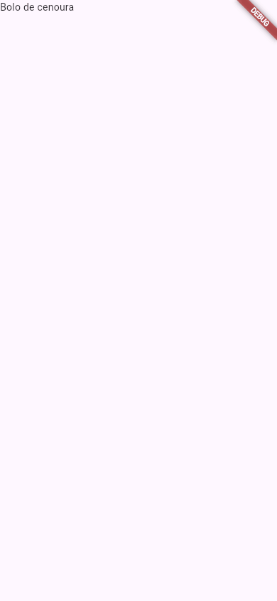
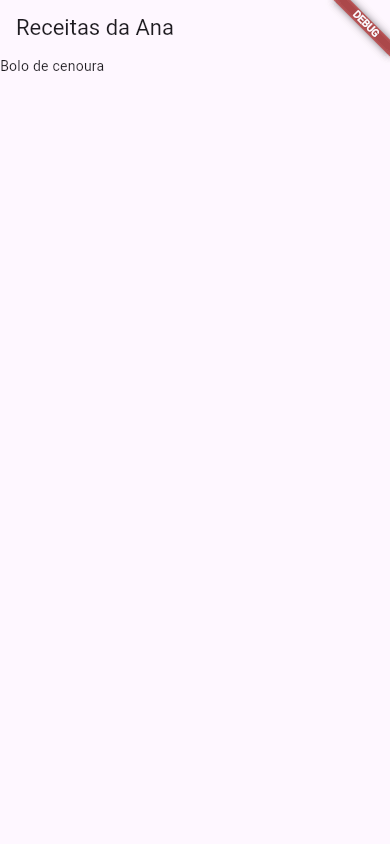
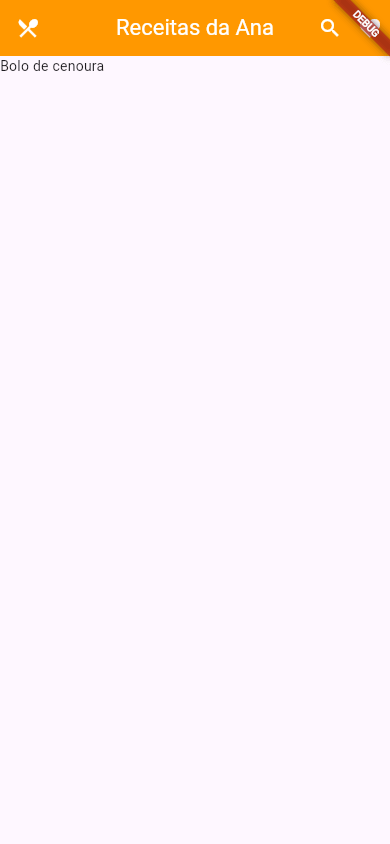
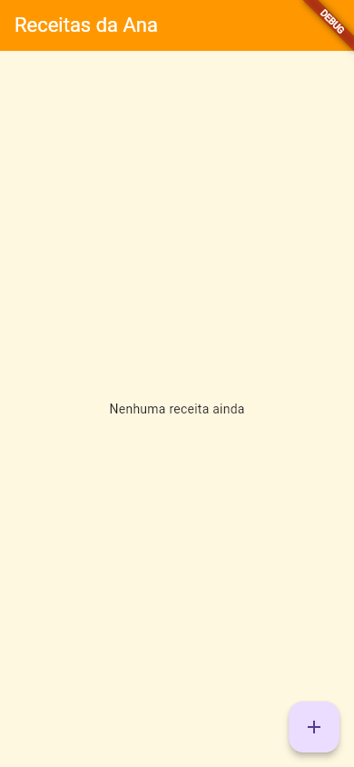
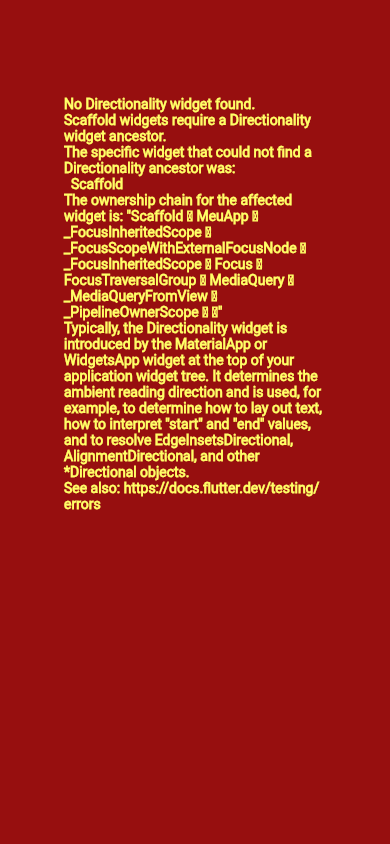

Flutter Scaffold e AppBar
Abra quase qualquer app no seu celular: no topo, uma barra com o nome da tela; no meio, o conteúdo; às vezes, um botão redondo no canto de baixo. Essa estrutura é tão comum que o Flutter tem um widget só para ela, o Scaffold. E a barra do topo é o AppBar. Nesta aula a Ana monta a tela principal do app de receitas com os dois.
- O que é o
Scaffolde as "vagas" que ele tem:appBar,body,floatingActionButton. - A pôr uma barra no topo com
AppBare um título. - A centralizar o título, mudar a cor da barra e pôr botões nela (
actionseleading). - A pôr o botão flutuante e mudar a cor de fundo da tela.
- Os erros reais: um
Textno lugar doAppBare umScaffoldsemMaterialApp.
Todos os apps desta aula foram compilados com o Flutter estável do laboratório e fotografados numa tela do tamanho de um celular.
A ideia: um formulário com campos marcados
Pense num formulário de papel com quadradinhos já desenhados: "Nome", "Endereço", "Assinatura". Você não decide onde fica cada coisa; só preenche os quadradinhos. Os que você deixa em branco simplesmente não aparecem.
O Scaffold ("andaime", em inglês) é esse formulário para uma tela. Cada parâmetro é um quadradinho com lugar marcado:
┌─────────────────────────┐ │ appBar │ ← a barra do topo ├─────────────────────────┤ │ │ │ │ │ body │ ← o conteúdo da tela │ │ │ ┌──┐ │ │ │+ │ │ ← floatingActionButton │ └──┘ │ └─────────────────────────┘
1. Só o body
import 'package:flutter/material.dart';
void main() {
runApp(const MeuApp());
}
class MeuApp extends StatelessWidget {
const MeuApp({super.key});
@override
Widget build(BuildContext context) {
return const MaterialApp(
home: Scaffold(
body: Text('Bolo de cenoura'),
),
);
}
}
- Scaffold( ... )
- A estrutura da tela. Ele pinta o fundo com a cor do tema e organiza as partes.
- body:
- "Corpo": o conteúdo principal. Recebe um widget (que pode ter vários dentro, como você vai ver em Row e Column).

body: o Scaffold pintou o fundo, e o texto foi para o canto.Igual ao que você viu com o Text solto, o body começa no canto de cima, à esquerda. A diferença é que agora o fundo tem cor (a do tema) e a faixa DEBUG apareceu, sinal de que o MaterialApp está lá em cima.
2. A barra do topo: appBar
return MaterialApp(
home: Scaffold(
appBar: AppBar(
title: const Text('Receitas da Ana'),
),
body: const Text('Bolo de cenoura'),
),
);
- appBar:
- A vaga da barra do topo. Ela só aceita widgets "de barra" (que sabem a própria altura), e o mais comum é o
AppBar. - AppBar( ... )
- A barra do topo do Material, com lugar para título, botões e ícone de voltar.
- title: const Text('Receitas da Ana')
- O título da barra. É um widget (quase sempre um
Text), e não uma string: por isso oText(...)em volta.

AppBar: o título no topo e o body começando logo abaixo da barra.Repare: o body agora começa abaixo da barra. O Scaffold reservou o espaço do appBar e deu ao body só o resto. No Material 3, a barra tem a mesma cor do fundo e o título fica à esquerda.
3. Enfeitando a barra: centerTitle, backgroundColor, actions e leading
appBar: AppBar(
leading: const Icon(Icons.restaurant_menu),
title: const Text('Receitas da Ana'),
centerTitle: true,
backgroundColor: Colors.orange,
foregroundColor: Colors.white,
actions: [
IconButton(
icon: const Icon(Icons.search),
onPressed: () {},
),
IconButton(
icon: const Icon(Icons.favorite),
onPressed: () {},
),
],
),
- leading:
- "O que vai na frente": um widget no canto esquerdo, antes do título. Quando o app tem mais de uma tela, é aqui que o Flutter põe sozinho a seta de voltar (aula Navigator).
- centerTitle: true
- Centraliza o título. Sem ele, o título fica à esquerda no Android e centralizado no iPhone, seguindo o costume de cada sistema.
- backgroundColor: Colors.orange
- A cor de fundo da barra. Sem ele, a barra usa a cor do tema.
- foregroundColor: Colors.white
- A cor do que fica sobre a barra: o título e os ícones.
- actions: [ ... ]
- "Ações": uma lista de widgets no canto direito, normalmente botões de ícone. Repare nos colchetes: é uma
Listdo Dart. - IconButton(icon: ..., onPressed: () {})
- Um botão que é só um ícone. O
onPressedé o que acontece no toque; aqui, nada ainda (aulas Ícones e Botões).

A faixa DEBUG fica por cima de tudo, inclusive dos botões: o coração está ali, escondido. É mais um motivo para escondê-la quando for mostrar o app (aula MaterialApp).
Missão: centralize o título da barra e pinte a barra de verde (Colors.green).
import 'package:flutter/material.dart';
void main() {
runApp(const MeuApp());
}
class MeuApp extends StatelessWidget {
const MeuApp({super.key});
@override
Widget build(BuildContext context) {
return MaterialApp(
home: Scaffold(
appBar: AppBar(
title: const Text('Receitas da Ana'),
),
body: const Text('Bolo de cenoura'),
),
);
}
}
import 'package:flutter/material.dart';
void main() {
runApp(const MeuApp());
}
class MeuApp extends StatelessWidget {
const MeuApp({super.key});
@override
Widget build(BuildContext context) {
return MaterialApp(
home: Scaffold(
appBar: AppBar(
title: const Text('Receitas da Ana'),
centerTitle: true,
backgroundColor: Colors.green,
),
body: const Text('Bolo de cenoura'),
),
);
}
}
4. O botão flutuante e a cor de fundo
import 'package:flutter/material.dart';
void main() {
runApp(const MeuApp());
}
class MeuApp extends StatelessWidget {
const MeuApp({super.key});
@override
Widget build(BuildContext context) {
return MaterialApp(
home: Scaffold(
backgroundColor: Colors.amber.shade50,
appBar: AppBar(
title: const Text('Receitas da Ana'),
backgroundColor: Colors.orange,
foregroundColor: Colors.white,
),
body: const Center(
child: Text('Nenhuma receita ainda'),
),
floatingActionButton: FloatingActionButton(
onPressed: () {},
child: const Icon(Icons.add),
),
),
);
}
}
- backgroundColor: Colors.amber.shade50
- A cor de fundo da tela inteira. O
.shade50é um tom bem clarinho do âmbar (as cores do Material vão doshade50, quase branco, aoshade900, bem escuro). - floatingActionButton:
- A vaga do "botão de ação flutuante", o botão redondo que fica sobre o conteúdo, no canto de baixo. É para a ação principal da tela: aqui, "nova receita".
- FloatingActionButton(onPressed: ..., child: ...)
- O botão em si, com um ícone de
+dentro.

O botão flutuante saiu lilás, e não laranja: ele usa as cores do tema (o roxo padrão do Material 3), e a Ana só pintou a barra. Para o app inteiro combinar, o caminho é o tema, na seção seguinte.
MaterialApp
└── Scaffold
├── AppBar (appBar)
│ └── Text('Receitas da Ana')
├── Center (body)
│ └── Text('Nenhuma receita ainda')
└── FloatingActionButton (floatingActionButton)
└── Icon(Icons.add)
O Scaffold tem outras vagas, que têm aulas próprias: drawer (o menu lateral, aula Drawer) e bottomNavigationBar (a barra de abas de baixo, aula Barra de Navegação Inferior).
Formas diferentes: a cor da barra no AppBar ou no tema
Você pintou a barra com backgroundColor. Isso vale só para esta barra. Num app com várias telas, repetir a cor em cada AppBar é trabalhoso e fácil de esquecer. A alternativa é dizer a cor uma vez só, no tema do MaterialApp:
return MaterialApp(
theme: ThemeData(
appBarTheme: const AppBarTheme(
backgroundColor: Colors.orange,
foregroundColor: Colors.white,
centerTitle: true,
),
),
home: Scaffold(
appBar: AppBar(title: const Text('Receitas da Ana')),
body: const Text('Bolo de cenoura'),
),
);
| Forma | Quando usar |
|---|---|
AppBar(backgroundColor: ...) | Uma tela que precisa ser diferente das outras, ou um app de uma tela só. |
ThemeData(appBarTheme: AppBarTheme(...)) | Para todas as barras do app ficarem iguais. É o jeito recomendado em apps de várias telas (aula Temas). |
| Nada (a cor do tema) | O padrão do Material 3 já combina com o colorScheme do app (aula MaterialApp). |
Quando dá errado
Text na vaga do appBar
A Ana quis economizar e pôs o título direto na vaga (o appBar está na linha 14 do arquivo):
return const MaterialApp(
home: Scaffold(
appBar: Text('Receitas da Ana'),
body: Text('Bolo de cenoura'),
),
);
lib/main.dart:14:17: Error: The argument type 'Text' can't be assigned to the parameter type 'PreferredSizeWidget?'.
- 'Text' is from 'package:flutter/src/widgets/text.dart'. « caminhos cortados
- 'PreferredSizeWidget' is from 'package:flutter/src/widgets/preferred_size.dart'.
appBar: Text('Receitas da Ana'),
^
- The argument type 'Text' can't be assigned to the parameter type 'PreferredSizeWidget?'.
- "Um
Textnão pode ir num parâmetro do tipoPreferredSizeWidget?". A vagaappBarnão aceita qualquer widget: só os que sabem dizer a altura que preferem (preferred size), porque oScaffoldprecisa reservar esse espaço antes de montar obody. OAppBaré um deles; oText, não. O?no fim quer dizer que a vaga também aceitanull(ficar vazia). - - 'Text' is from ...
- De onde vem cada tipo: aqui, dos arquivos do próprio Flutter.
Como consertar: appBar: AppBar(title: Text('Receitas da Ana')).
Scaffold sem MaterialApp
@override
Widget build(BuildContext context) {
return const Scaffold(
body: Center(
child: Text('Receitas da Ana'),
),
);
}

Scaffold não achou o que precisava acima dele.O console mostrou (aqui, o começo e o fim da mensagem; no meio vem a mesma explicação que você leu em Seu Primeiro App, e no fim, o stack com dezenas de linhas de dentro do Flutter):
══╡ EXCEPTION CAUGHT BY WIDGETS LIBRARY ╞═══════════════════════════════════════════════════════════ The following assertion was thrown building Scaffold(dirty, state: ScaffoldState#100de(tickers: tracking 3 tickers)): No Directionality widget found. Scaffold widgets require a Directionality widget ancestor. … The relevant error-causing widget was: Scaffold Scaffold:file:///home/ana/app/lib/main.dart:12:18 …
- No Directionality widget found.
- O mesmo erro do
Textsolto: ninguém acima informou a direção do texto. - Scaffold widgets require a Directionality widget ancestor.
- Agora quem reclama é o
Scaffold, o primeiro widget da árvore que precisa dessa informação. - The relevant error-causing widget was: ... main.dart:12:18
- "O widget que causou o erro": o
Scaffoldda linha 12, coluna 18, do seu arquivo. Essa linha é a mais útil da mensagem: ela aponta direto para o seu código.
Como consertar: ponha o MaterialApp por cima: return const MaterialApp(home: Scaffold(...));. O Scaffold depende de várias coisas que o MaterialApp fornece (direção, tema, textos do sistema); a direção é só a primeira que ele procura.
Referência rápida
| Parâmetro | De quem | O que faz |
|---|---|---|
body | Scaffold | O conteúdo da tela |
appBar | Scaffold | A barra do topo (um AppBar) |
floatingActionButton | Scaffold | O botão redondo flutuante |
backgroundColor | Scaffold | A cor de fundo da tela |
drawer / bottomNavigationBar | Scaffold | Menu lateral / barra de baixo (aulas próprias) |
title | AppBar | O título (um widget, quase sempre Text) |
centerTitle | AppBar | true centraliza o título |
backgroundColor / foregroundColor | AppBar | Cor da barra / cor do título e dos ícones |
leading | AppBar | Widget à esquerda do título |
actions | AppBar | Lista de widgets à direita (botões) |
Exercícios
1. O conteúdo
Complete com a vaga do Scaffold onde vai o conteúdo da tela:
2. O título no meio
Complete para centralizar o título do AppBar:
3. Os botões da direita
Qual parâmetro do AppBar recebe a lista de botões do lado direito?
4. Por que o title do AppBar é Text('Receitas') e não só 'Receitas'?
5. Para que serve o floatingActionButton?
Missão final: a tela da lojinha
Missão: monte a tela da lojinha: um AppBar com o título Lojinha da Ana, um IconButton com o ícone Icons.shopping_cart nas actions, e um botão flutuante com Icons.add.
import 'package:flutter/material.dart';
void main() {
runApp(const LojinhaApp());
}
class LojinhaApp extends StatelessWidget {
const LojinhaApp({super.key});
@override
Widget build(BuildContext context) {
return MaterialApp(
home: Scaffold(
body: const Center(child: Text('Produtos')),
),
);
}
}
import 'package:flutter/material.dart';
void main() {
runApp(const LojinhaApp());
}
class LojinhaApp extends StatelessWidget {
const LojinhaApp({super.key});
@override
Widget build(BuildContext context) {
return MaterialApp(
home: Scaffold(
appBar: AppBar(
title: const Text('Lojinha da Ana'),
actions: [
IconButton(
icon: const Icon(Icons.shopping_cart),
onPressed: () {},
),
],
),
body: const Center(child: Text('Produtos')),
floatingActionButton: FloatingActionButton(
onPressed: () {},
child: const Icon(Icons.add),
),
),
);
}
}
Resumo
- O
Scaffoldé a estrutura de uma tela, com vagas marcadas:appBarno topo,bodyno meio,floatingActionButtonno canto de baixo. - O
AppBaré a barra do topo:title(um widget),centerTitle,backgroundColor,foregroundColor,leadingà esquerda eactions(uma lista) à direita. - O
backgroundColordoScaffoldpinta o fundo da tela. - A vaga
appBarsó aceita widgets de barra: umTextali é erro de compilação. - O
Scaffoldprecisa de umMaterialAppacima dele.